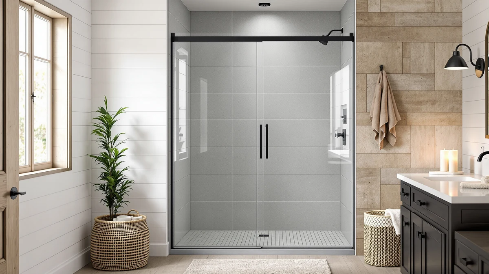

WinZo Frameless Sliding Glass Review (2026): Worth It?
Prices and picks verified as of September 2026. Independent, reader-supported reviews.


Quick Answer
The WinZo Frameless Sliding Glass Shower Door is the pick to buy if your alcove opening measures 56 to 60 inches wide by 75 inches tall and you want a soft-close sliding panel instead of a hinged pivot door. At $469.99 it costs more than the three pivot-style alternatives below, so it only makes sense if that adjustable range and sliding configuration fit what you need.
Our pick: WinZo Frameless Sliding Glass Shower, $469.99 Check Price on Amazon
Bottom line: our top pick is the WinZo Frameless Sliding Glass Shower Door 56‑60“ W x 75” H at $469.99.
Things to Know Before You Buy
- The WinZo Frameless Sliding Glass Shower Door fits a 56 to 60 inch wide, 75 inch tall opening, with a 4 inch telescopic adjustment instead of one fixed measurement.
- At $469.99, it costs more than all three alternatives in this comparison: the KPUY Semi-Frameless Pivot runs $449.96, the lenphilvee Frameless Pivot is $398.90, and the Keonjinn Semi-Frameless Pivot is $399.99.
- WinZo uses a sliding roller-and-rail system with a soft-close mechanism, while the three alternatives here are hinged pivot doors that swing open instead.
- The 8mm ANSI-certified tempered glass is thicker than the 6mm panels on the KPUY and Keonjinn pivot doors, with a nano coating on both sides.
- Measure your opening at the top, middle, and bottom after tile installation, since even an adjustable-range door like this one has limits.
This winzo frameless sliding glass review breaks down pricing, adjustable sizing, and verified owner feedback for a soft-close sliding shower door, plus three lower-priced pivot-style alternatives worth comparing before you order. You are probably here because your shower opening measures somewhere in the 56 to 60 inch range and you want a door that slides instead of swings.
WinZo built the Frameless Sliding Glass Shower Door for a 56 to 60 inch opening and a 75 inch height, with a 4 inch telescopic adjustment and a soft-close mechanism built into the roller-and-rail hardware. At $469.99 it costs $20.03 more than the KPUY Semi-Frameless Pivot, $71.09 more than the lenphilvee Frameless Pivot, and $70.00 more than the Keonjinn Semi-Frameless Pivot, the three alternatives in this comparison. That price gap buys a sliding configuration and a soft-close hinge system instead of a swinging pivot door.
Why You Should Trust Us
Ilane Tall covers bathroom fixtures and shower hardware for Best Shower Doors and focuses on how listed dimensions and pricing translate into a real installation. For this winzo frameless sliding glass review, our editorial team compared WinZo's listed specifications and current Amazon pricing against three pivot-style shower doors in a similar price band. We do not run a physical testing lab and do not claim to have installed this door ourselves. Our conclusions come from researching listed specifications, pricing, and what verified owners report after their own installation, not from installing the door ourselves.
Our Research Experience
Our research process for this winzo frameless sliding glass review started with WinZo's listed dimensions and hardware specifications, then moved to Amazon's current pricing and the verified purchase reviews attached to comparable sliding doors in this price range. We compared the door's 56 to 60 inch adjustable width and 75 inch height against the fixed and adjustable ranges of the KPUY, lenphilvee, and Keonjinn pivot doors to see which openings each option actually covers. We analysed pricing across all four listings on the same day so the comparison reflects a single snapshot instead of prices pulled from different dates. Where a listing lacks a verified star rating, as WinZo's does, we say so directly instead of filling the gap with a guess. We do not own or install these doors, so our conclusions rely on manufacturer specifications, pricing, and what verified buyers report about similar installations.
Overview & Specs

WinZo Frameless Sliding Glass Shower
What we like
- A 4 inch telescopic adjustment covers the full 56 to 60 inch range instead of locking you into one fixed measurement
- The roller-and-rail hardware includes a soft-close mechanism that slows the door before it shuts
- 8mm ANSI-certified tempered glass carries a nano coating on both sides for easier wipe-downs
- Reversible installation lets you set the door for left- or right-side entry
- A 27 inch walk-in opening at full width is generous for a sliding configuration
Flaws but not dealbreakers
- At $469.99, it costs more than all three pivot-door alternatives in this comparison
- The listing carries no verified star rating or review count yet
- A sliding door needs clear track space on both sides of the opening, unlike a pivot door that swings into open floor space
| Material | — |
| Size | 56-60"W x 75"H |
The WinZo Frameless Sliding Glass Shower Door targets a specific problem: a 56 to 60 inch alcove opening where you want a sliding panel instead of a hinged one. The 4 inch telescopic adjustment means you are not locked into an exact measurement the way a fixed-size door demands, and the soft-close mechanism on the roller-and-rail hardware is meant to stop the panel from slamming at the end of its track.
At $469.99, the WinZo costs $20.03 more than the KPUY Semi-Frameless Pivot, $71.09 more than the lenphilvee Frameless Pivot, and $70.00 more than the Keonjinn Semi-Frameless Pivot, the three alternatives in this winzo frameless sliding glass review. That premium buys 8mm tempered glass with a nano coating on both sides and a soft-close slide, but it does not come with a documented rating history, since the listing shows no verified star rating yet. If a sliding configuration matters more to you than a swinging pivot door, that trade-off may be worth it.
What We Liked
The clearest strength of the WinZo Frameless Sliding Glass Shower Door is its adjustment range. A 4 inch telescopic fit across the 56 to 60 inch opening means you can dial in the exact width after your tile is installed, rather than hoping a fixed-size door happens to match. At the full 60 inch width, the walk-in opening reaches 27 inches, which is wide for a sliding door and comparable to what the pivot alternatives here offer with their hinge swing.
The soft-close mechanism built into the roller-and-rail hardware is a real upgrade over a basic sliding track. Stainless steel components carry the panel, and the integrated soft-close slows it down before it reaches the end of the rail, which cuts down on the bang that cheaper sliding doors are known for. Brushed nickel hardware also keeps a consistent finish if you are matching other fixtures in the room.
Glass quality is another point in WinZo's favor. The 8mm ANSI-certified tempered glass is thicker than the 6mm panels used on the KPUY and Keonjinn pivot doors, and the nano coating on both sides is designed to repel water spots and soap residue so the panel needs less scrubbing between cleanings.
What Could Be Better
Price is the most obvious drawback. At $469.99, the WinZo Frameless Sliding Glass Shower Door costs $20.03 more than the KPUY Semi-Frameless Pivot, $71.09 more than the lenphilvee Frameless Pivot, and $70.00 more than the Keonjinn Semi-Frameless Pivot. For a door in the same general size category, that gap is hard to justify unless the sliding configuration specifically matters to you over a hinged pivot design.
The listing does not include a verified star rating or review count, so we cannot point to a documented satisfaction history the way we sometimes can for older listings. WinZo added this product to Amazon recently, and buyers who want proof from a large base of verified reviews before ordering will not find it here yet.
A sliding door also carries a physical trade-off a pivot door does not: it needs clear wall space on both sides of the opening for the panel to travel. If your bathroom layout has a fixture, niche, or towel bar close to the track path, one of the pivot alternatives below might fit your space better than a sliding panel would.
Who Is It For?
The WinZo Frameless Sliding Glass Shower Door makes the most sense for you if your alcove opening falls somewhere in the 56 to 60 inch range and you specifically want a sliding panel rather than a hinged one. It also suits buyers who want thicker 8mm glass and are willing to pay a premium for that and a soft-close slide over a documented rating history.
It is not the right choice if your bathroom does not have clear track space on both sides of the opening, since a sliding door needs that room to travel. It is also not the best fit if your budget is tight, since all three alternatives in this comparison cost less for a similar size category.
If you are renovating a rental unit or a secondary bathroom where the sliding mechanism carries less weight, the lenphilvee or Keonjinn pivot alternatives let you put the saved $70 to $71 toward tile, a new showerhead, or other fixtures instead.
Alternatives to Consider
If the WinZo Frameless Sliding Glass Shower Door does not match your opening size, budget, or your preference for a hinged door, these three pivot-style alternatives are worth comparing before you order.

Editor's Pick
KPUY Semi-Frameless Pivot Shower Door
A 42 to 48 inch pivot door with a 6 inch adjustment range, $20.03 less than the WinZo and a better fit for narrower openings.
$449.96
Check Price on Amazon
Best Value
lenphilvee 34"×60" Frameless Pivot Shower
The lowest price in this comparison at $398.90, with 10mm glass thicker than the WinZo's 8mm panel and a built-in towel bar for tub enclosures.
$398.90
Check Price on Amazon
Premium Choice
Keonjinn 46-48" W x 72"
A 46 to 48 inch semi-frameless pivot door at $399.99, reversible for left- or right-side opening like the WinZo but $70 less.
$399.99
Check Price on AmazonFrequently Asked Questions
How much does the WinZo Frameless Sliding Glass Shower door cost?
The WinZo Frameless Sliding Glass Shower Door lists at $469.99, which makes it the most expensive door in this comparison. The KPUY Semi-Frameless Pivot runs $449.96, the lenphilvee Frameless Pivot is $398.90, and the Keonjinn Semi-Frameless Pivot is $399.99.
What size opening does the WinZo Frameless Sliding Glass Shower door fit?
The WinZo is built for a 56 to 60 inch wide, 75 inch tall opening, with a 4 inch telescopic adjustment that covers that full range. Measure your opening at the top, middle, and bottom after your tile is installed, since the adjustment range still has limits.
Is the WinZo Frameless Sliding Glass Shower worth it over the pivot-door alternatives?
It depends on whether a sliding configuration matters more to you than a hinged pivot door and whether your opening falls in the 56 to 60 inch range. If you want to save $20 to $71, or your bathroom does not have clear track space on both sides of the opening, the KPUY, lenphilvee, or Keonjinn alternatives are worth comparing first.
Final Verdict
This winzo frameless sliding glass review comes down to a trade-off between a sliding configuration and price. At $469.99, the WinZo Frameless Sliding Glass Shower Door costs more than every pivot-door alternative here, but its 4 inch adjustment range, soft-close hardware, and 8mm tempered glass make it the strongest pick if your opening falls in the 56 to 60 inch range and you want a sliding panel instead of a hinged one. If your bathroom lacks clear track space or your budget is tighter, the KPUY, lenphilvee, or Keonjinn pivot alternatives above will likely fit your space and your budget better than paying a premium for WinZo's sliding design.